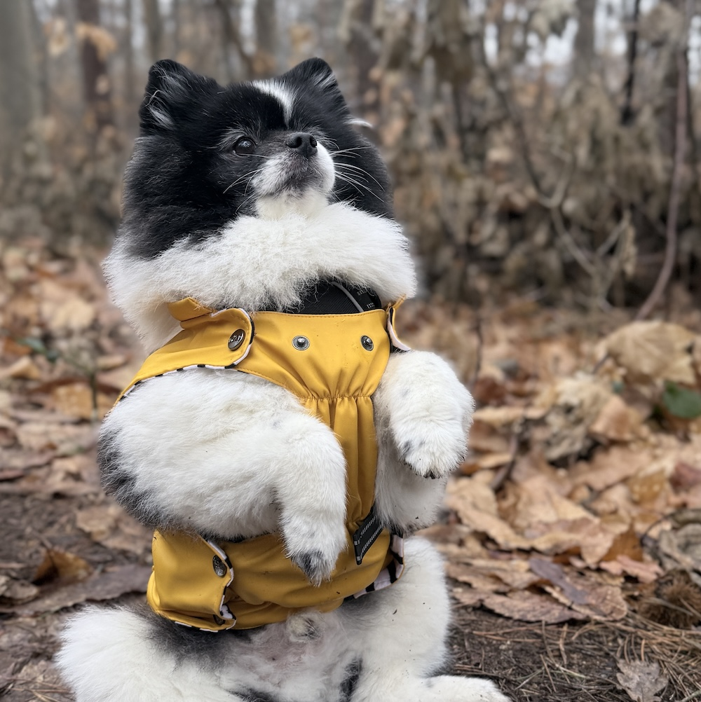

Over mij
Mijn traject naar deze opleiding
Na mijn middelbareschoolcarrière ben ik in een half jaar in het buitenland gaan studeren. De opleiding was Fashion & Design, bij Education first, in New York. Bij deze opleiding heb ik mijn certificaat behaald, maar deed het voornamelijk om mijn Engels te verbeteren.
Verder heb ik hier ook echt zelfstandig leren zijn, vooral zo ver van huis.
Daarna, ben ik begonnen aan mijn opleiding Schoonheidsspecialiste. In behaalde ik hiervoor mijn diploma. Dit is iets wat ik echt met passie doe! Ik heb dus van mijn hobby een bijverdienste gemaakt.
Naast mijn studie-uren, werk ik dus thuis ook in bijberoep als schoonheidsspecialiste. Dit deed ik ervoor ook al, maar dan na mijn werkuren. In ben ik mijn BTW-nummer al gaan aanvragen en al rustig opgestart.
Wat later ben ik me ook gaan verdiepen in de hormonen en voeding, om iedereen écht verder te kunnen helpen. Zo ben ik van alle werelden wel wat thuis, en kan ik veel nauwkeuriger advies verlenen.
En waarom dan nu programmeren?
Zoals ik al eerder had vermeld, heb ik Boekhouden-Informatica gestudeerd in het middelbaar. Hier heb ik dus al kennisgemaakt met de basis CSS en HTML. Misschien wel de absolute basis, maar dat heeft wel een interesse gewekt bij mij. Na het middelbaar had ik gekozen om zo snel mogelijk al op de werkvloer te starten in combinatie met het volwassenenonderwijs.
Nu, 10(!) jaar later, heb ik toch besloten hierin verder te gaan, nadat het altijd in mijn achterhoofd is gebleven. Het logisch en analytisch redeneren is een hele andere kant van mij, die ik zeker even leuk vind als de beautywereld.
Verder heb ik natuurlijk ook nog hobby's

Mijn huisdieren
Mijn allereerste hobby is dieren. Zelf heb ik 3 (!!!) honden thuis. Allemaal van hetzelfde ras. In hebben we de eerste binnengehaald, en dan zo onze collectie uitgebreid :). Elk hondje heeft bij ons het baasje gekozen, dus wel een beetje anders als normaal. Ik vind het superleuk om met mijn hondje te gaan wandelen, hem nieuwe vaardigheden te leren of gewoon lekker te luieren. Zoals je op de foto kunt zien, is het echt een dotje!! Zijn naam is Pippa en hij is van 2017.
Gezondheid en welzijn
Alles in verband met beauty! Ik ben al vanaf mijn puberjaren hier mee bezig. Van make-up, tot skincare en later ben ik dit dan ook gaan studeren! Deze sector is ook zo leuk, door alle nieuwe technieken die je constant kan bijleren. Hier heb ik in dan ook van mijn (andere) passie, mijn zelfstandig statuut voor aangevraagd.
Daarnaast heb ik me ook gaan verdiepen in voeding en hormonen.
Vrijwilligerswerk
Daarnaast heb ik ook een tijdje vrijwilligerswerk gedaan bij het VOC Neteland. En wat was dit leuk! Het VOC is een opvangcentrum voor inheemse wilde dieren, in Herenthout. Ik ging altijd naar huis met een lach op mijn gezicht. Ik mocht er een hele dag bezig zijn met het verzorgen van inheemse wilde dieren!
Helaas ben ik nu even gestopt, om me volledig in te zetten voor deze opleiding. Ik ben wel van plan de nodige opleidingen te doen hiervoor, zodat ik ook meer dieren kan verzorgen. Ik draag nog wel elke maand mijn steentje bij voor hen, door een kleine bijdrage te storten. Wil je graag ook je steentje bijdragen?